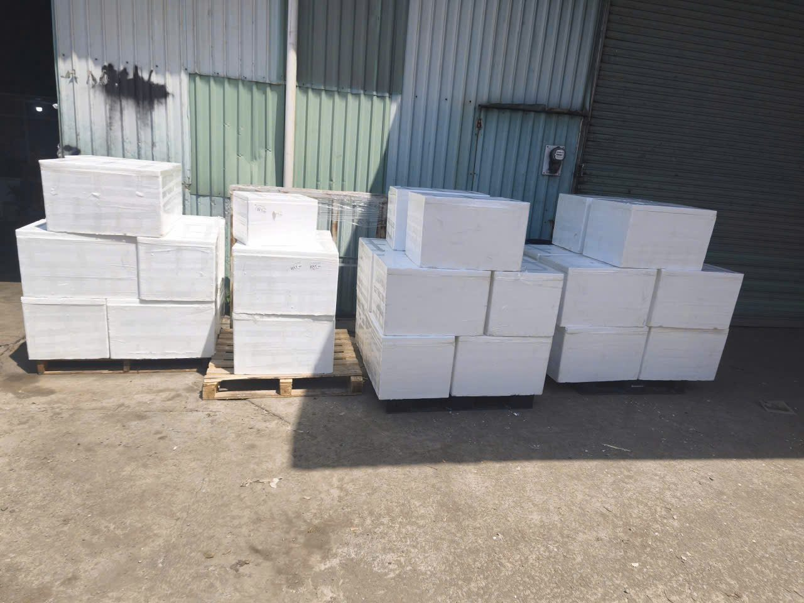
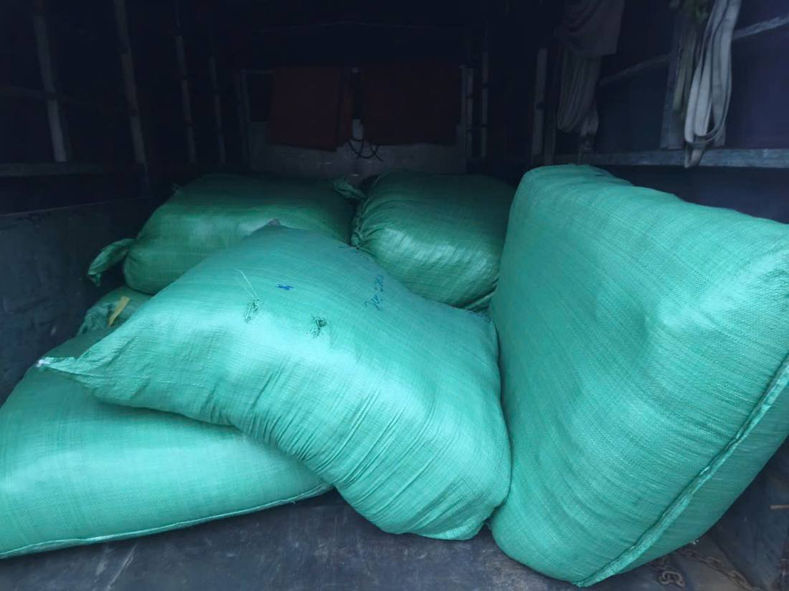
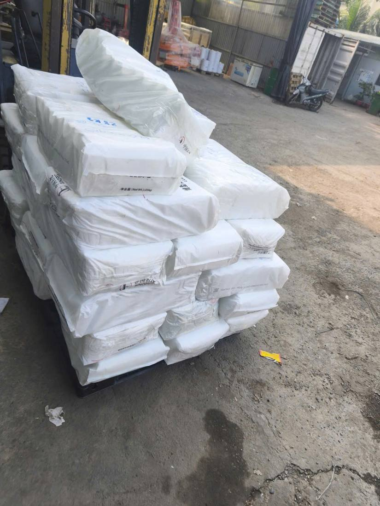
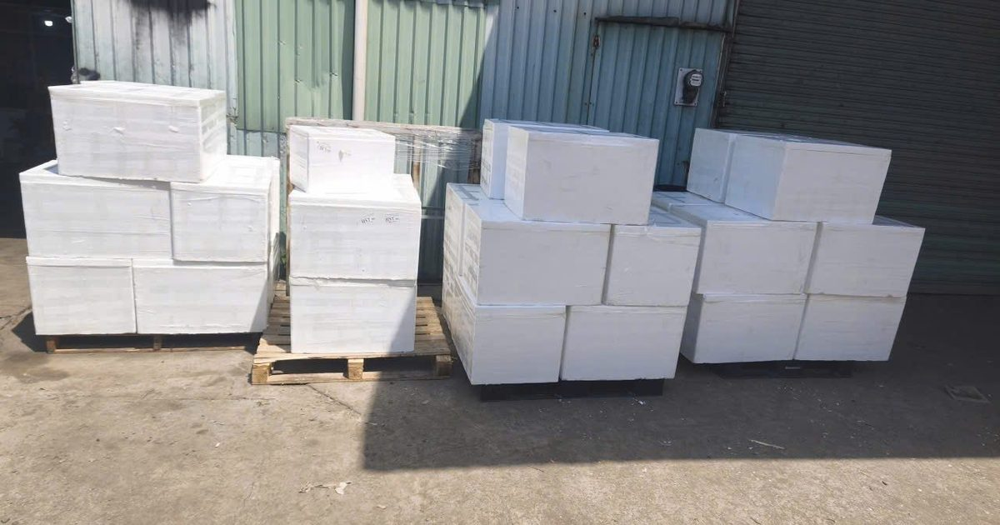
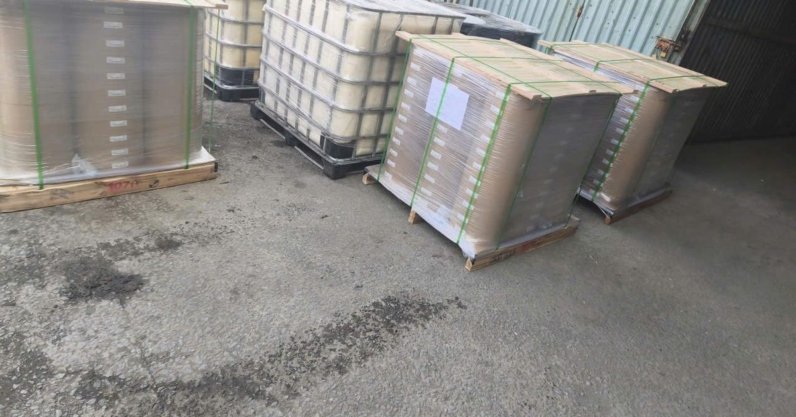

Tuyến vận chuyển quốc tế đường bộ
4 tuyến chính giữa Việt Nam, Campuchia, Lào và Thái Lan: nhận hàng tận nơi, giao tận nơi, có bảo hiểm.



Việt Nam → Campuchia
Hàng đi · Phnom Penh & các tỉnhNhận hàng tận nơi tại Việt Nam, đóng gói chắc chắn và vận chuyển đến Phnom Penh cùng các tỉnh Campuchia.
Campuchia → Việt Nam
Hàng về · Nhanh 2–3 ngàyTừ Phnom Penh về Việt Nam nhanh chỉ 2–3 ngày, nhận hàng tại kho SokMok và giao tận nơi đúng hẹn.
Việt Nam → Lào
Vận chuyển đường bộVận chuyển đường bộ ổn định bằng đội xe tải, hàng được đóng gói kỹ, giao an toàn đến Lào.

Việt Nam → Thái Lan
Vận chuyển đường bộKết nối thương mại Việt – Thái bằng đường bộ, an toàn và đúng hẹn.
An tâm trên mọi hành trình
Chủ động kiểm soát
Theo dõi hành trình đơn hàng online.
Đội ngũ chuyên nghiệp
Chuyên viên logistics nhiều năm kinh nghiệm.
Bảo hiểm hàng hóa
Hàng được bảo quản và bảo hiểm cẩn thận.
Giá cạnh tranh
Tối ưu chi phí cho khách thường xuyên.
Hàng hóa thực tế tại SokMok
Ảnh thật tại kho và trên xe – bấm vào ảnh để xem lớn.






Câu hỏi thường gặp
Chưa thấy câu trả lời bạn cần? Gọi hotline, SokMok hỗ trợ ngay.
Tôi cần chuẩn bị gì khi gửi hàng?
SokMok vận chuyển những tuyến nào?
Hàng từ Campuchia về Việt Nam mất bao lâu?
Làm sao để biết giá cước?
Hàng hóa có được bảo hiểm và theo dõi không?
Giờ làm việc và cách liên hệ SokMok?
Tin tức & kinh nghiệm vận chuyển
Hướng dẫn gửi hàng, cách tính cước, đóng gói và lưu ý khi vận chuyển hàng sang Campuchia, Lào, Thái Lan.
 Hướng dẫn
Hướng dẫnGửi hàng đi Campuchia: hướng dẫn từ A đến Z cho người mới
Lần đầu gửi hàng sang Campuchia? Đây là toàn bộ quy trình từ liên hệ, đóng gói, gửi về kho đến khi hàng giao tận tay người nhận ở Phnom Penh và các tỉnh.
6 phút đọc
Hướng dẫnVận chuyển hàng từ Campuchia về Việt Nam: quy trình và thời gian
Tuyến Campuchia → Việt Nam của SokMok chỉ khoảng 2–3 ngày từ Phnom Penh. Cùng xem quy trình gửi, cách chuẩn bị hàng và những lưu ý để hàng về nhanh, an toàn.
5 phút đọc
Hướng dẫnGửi hàng đi Lào bằng đường bộ: cửa khẩu, thời gian, lưu ý
Gửi hàng từ TP.HCM sang Viêng Chăn và các tỉnh của Lào bằng đường bộ cần lưu ý những gì? Tổng quan về lộ trình, cửa khẩu và cách chuẩn bị hàng.
5 phút đọcCần gửi hàng đi Campuchia, Lào, Thái Lan?
Gọi hoặc nhắn Zalo để được tư vấn nhanh trong giờ làm việc.